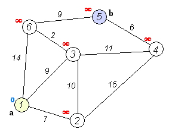

Dijkstra(迪杰斯特拉)算法是典型的单源最短路径算法，用于计算一个节点到其他所有节点的最短路径。主要特点是以起始点为中心向外层层扩展，直到扩展到终点为止。Dijkstra算法是很有代表性的最短路径算法，注意该算法要求图中不存在负权边。用于求图中指定两点之间的最短路径，或者是指定一点到其它所有点之间的最短路径。实质上是贪心算法。
Dijkstra算法可以说是BFS（宽度优先搜索算法）的升级版，BFS的实现可以依靠队列实现，而Dijkstra算法可以通过优先级队列进行实现。

1. 算法描述
Dijkstra算法利用贪心策略，从起始点开始出发，选择距离当前位置最近的点加入路径。
因此算法用到两个集合：
- 当前路径中已有点的集合
- 当前路径中未包含点的集合
原理：Dijkstra的大致思想就是，根据初始点，挨个的把离初始点最近的点一个一个找到并加入集合，集合中所有的点的d[i]都是该点到初始点最短路径长度，由于后加入的点是根据集合S中的点为基础拓展的，所以也能找到最短路径。
1.将图上的初始点看作一个集合S，其它点看作另一个集合
2.根据初始点，求出其它点到初始点的距离d[i] （若相邻，则d[i]为边权值；若不相邻，则d[i]为无限大）
3.选取最小的d[i]（记为d[x]），并将此d[i]边对应的点（记为x）加入集合S
4.再根据x，更新跟 x 相邻点 y 的d[y]值：d[y] = min{ d[y], d[x] + 边权值w[x][y] }，因为可能把距离调小，所以这个更新操作叫做松弛操作。
5.重复3，4两步，直到目标点也加入了集合，此时目标点所对应的d[i]即为最短路径长度。
较好理解的视频：（用优先级队列实现）
https://www.bilibili.com/video/BV1ts41157Sy?from=search&seid=18117383376943679146